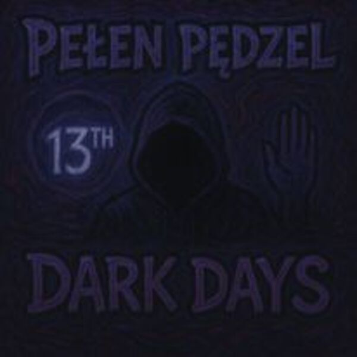
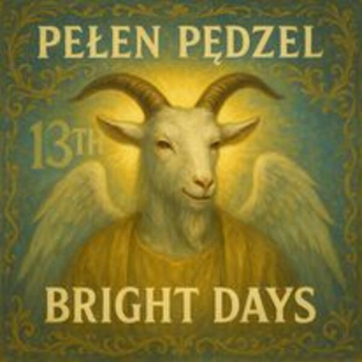

Dark Days
Etap cienia i doświadczeń.
SłuchajŚCIEŻKA DŹWIĘKOWA
Muzyka powstała jako naturalne uzupełnienie książki. Niektórych rzeczy nie da się wyrazić wyłącznie zdaniem — potrzebują rytmu, ciszy między wersami i emocji.

Etap cienia i doświadczeń.
Słuchaj
Etap ruchu w stronę światła.
SłuchajWarstwa serca i wewnętrznego rdzenia.
Słuchaj